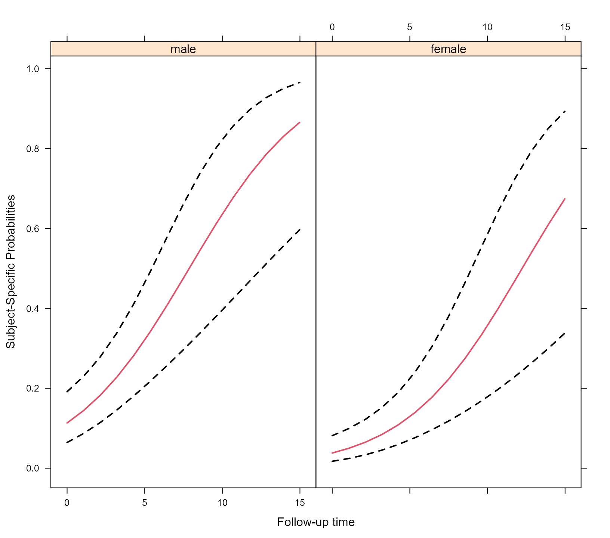
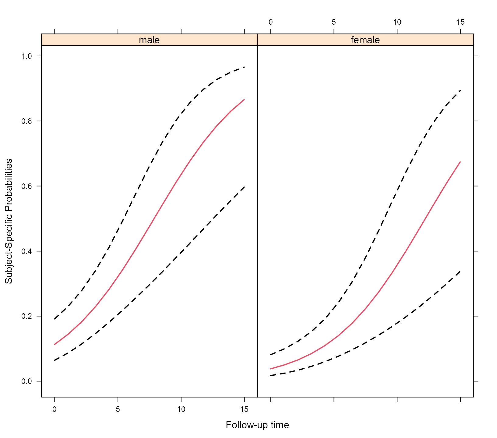
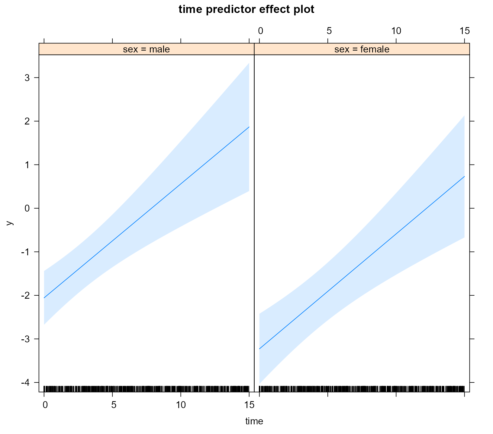
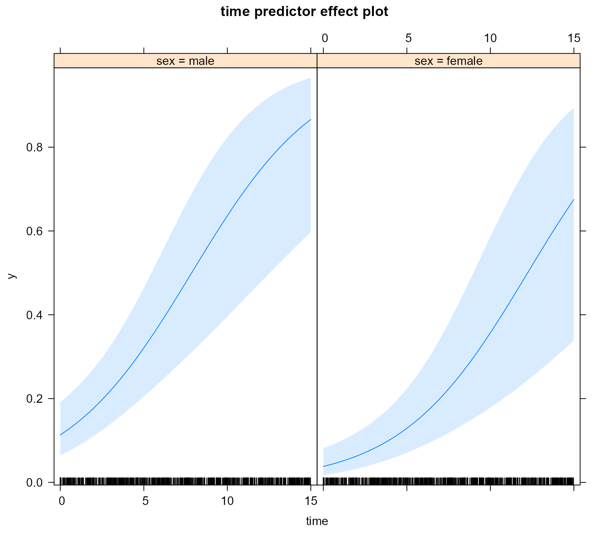

Methods for MixMod Objects
Dimitris Rizopoulos
2020-06-25
Source:vignettes/Methods_MixMod.Rmd
Methods_MixMod.RmdMixMod Objects
In this vignette we illustrate the use of a number of basic generic functions for models fitted by the mixed_model() function of package GLMMadaptive.
We start by simulating some data for a binary longitudinal outcome:
set.seed(1234) n <- 100 # number of subjects K <- 8 # number of measurements per subject t_max <- 15 # maximum follow-up time # we constuct a data frame with the design: # everyone has a baseline measurment, and then measurements at random follow-up times DF <- data.frame(id = rep(seq_len(n), each = K), time = c(replicate(n, c(0, sort(runif(K - 1, 0, t_max))))), sex = rep(gl(2, n/2, labels = c("male", "female")), each = K)) # design matrices for the fixed and random effects X <- model.matrix(~ sex * time, data = DF) Z <- model.matrix(~ time, data = DF) betas <- c(-2.13, -0.25, 0.24, -0.05) # fixed effects coefficients D11 <- 0.48 # variance of random intercepts D22 <- 0.1 # variance of random slopes # we simulate random effects b <- cbind(rnorm(n, sd = sqrt(D11)), rnorm(n, sd = sqrt(D22))) # linear predictor eta_y <- as.vector(X %*% betas + rowSums(Z * b[DF$id, ])) # we simulate binary longitudinal data DF$y <- rbinom(n * K, 1, plogis(eta_y))
We continue by fitting the mixed effects logistic regression for y assuming random intercepts and random slopes for the random-effects part.
fm <- mixed_model(fixed = y ~ sex * time, random = ~ time | id, data = DF, family = binomial())
Detailed Output, Confidence Intervals, Covariance Matrix of the MLEs and Robust Standard Errors
As in the majority of model-fitting functions in R, the print() and summary() methods display a short and a detailed output of the fitted model, respectively. For 'MixMod' objects we obtain
fm #> #> Call: #> mixed_model(fixed = y ~ sex * time, random = ~time | id, data = DF, #> family = binomial()) #> #> #> Model: #> family: binomial #> link: logit #> #> Random effects covariance matrix: #> StdDev Corr #> (Intercept) 0.6812 #> time 0.2511 0.6538 #> #> Fixed effects: #> (Intercept) sexfemale time sexfemale:time #> -2.05781734 -1.17087686 0.26167597 0.00232125 #> #> log-Lik: -358.8143
and
summary(fm) #> #> Call: #> mixed_model(fixed = y ~ sex * time, random = ~time | id, data = DF, #> family = binomial()) #> #> Data Descriptives: #> Number of Observations: 800 #> Number of Groups: 100 #> #> Model: #> family: binomial #> link: logit #> #> Fit statistics: #> log.Lik AIC BIC #> -358.8143 731.6287 749.8648 #> #> Random effects covariance matrix: #> StdDev Corr #> (Intercept) 0.6812 #> time 0.2511 0.6538 #> #> Fixed effects: #> Estimate Std.Err z-value p-value #> (Intercept) -2.0578 0.3149 -6.5347 < 1e-04 #> sexfemale -1.1709 0.4685 -2.4990 0.012454 #> time 0.2617 0.0564 4.6437 < 1e-04 #> sexfemale:time 0.0023 0.0783 0.0296 0.976364 #> #> Integration: #> method: adaptive Gauss-Hermite quadrature rule #> quadrature points: 11 #> #> Optimization: #> method: hybrid EM and quasi-Newton #> converged: TRUE
The output is rather self-explanatory. However, just note that the fixed-effects coefficients are on the linear predictor scale, and hence are the corresponding log-odds for the intercept and log-odds ratios for the rest of the parameters. The summary() only shows the estimated coefficients, standard errors and p-values, but no confidence intervals. These can be separately obtained using the confint() method, i.e.,
exp(confint(fm)) #> 2.5 % Estimate 97.5 % #> (Intercept) 0.06890556 0.1277325 0.2367818 #> sexfemale 0.12378722 0.3100949 0.7768076 #> time 1.16326434 1.2991055 1.4508097 #> sexfemale:time 0.85964467 1.0023239 1.1686844
By default the confidence intervals are produced for the fixed effects. Hence, taking the exp we obtain the confidence intervals for the corresponding odds-ratios. In addition, by default, the level of the confidence intervals is 95%. The following piece of code produces 90% confidence intervals for the variances of the random intercepts and slopes, and for their covariance:
confint(fm, parm = "var-cov", level = 0.90) #> 5 % Estimate 95 % #> var.(Intercept) 0.05545693 0.46399737 0.67819795 #> cov.(Int)_time -0.03468682 0.11181495 0.47559543 #> var.time 0.02278320 0.06304059 0.09032773
The estimated variance-covariance matrix of the maximum likelihood estimates of all parameters is returned using the vcov() method, e.g.,
vcov(fm) #> (Intercept) sexfemale time sexfemale:time #> (Intercept) 0.099164705 -0.074769353 -0.008316261 6.168487e-03 #> sexfemale -0.074769353 0.219526269 0.005957460 -1.767002e-02 #> time -0.008316261 0.005957460 0.003175429 -2.973333e-03 #> sexfemale:time 0.006168487 -0.017670024 -0.002973333 6.138261e-03 #> D_11 -0.086971760 -0.019733168 0.008210245 1.821123e-03 #> D_12 0.016167156 0.003864048 -0.001709328 -4.426244e-04 #> D_22 -0.078544417 -0.017945495 0.009838813 6.496603e-05 #> D_11 D_12 D_22 #> (Intercept) -0.086971760 0.0161671559 -7.854442e-02 #> sexfemale -0.019733168 0.0038640476 -1.794549e-02 #> time 0.008210245 -0.0017093279 9.838813e-03 #> sexfemale:time 0.001821123 -0.0004426244 6.496603e-05 #> D_11 0.416971013 -0.0960446948 4.475358e-01 #> D_12 -0.096044695 0.0358515663 -1.890725e-01 #> D_22 0.447535838 -0.1890725235 1.133391e+00
The elements of this covariance matrix that correspond to the elements of the covariance matrix of the random effects (i.e., the elements D_xx) are on the log-Cholesky scale.
Robust standard errors using the sandwich estimator can be obtained by setting the logical argument sandwich to TRUE, i.e.,
vcov(fm, sandwich = TRUE) #> (Intercept) sexfemale time sexfemale:time #> (Intercept) 0.100359315 -0.070429009 -0.005291991 0.0024171378 #> sexfemale -0.070429009 0.214418185 0.003083107 -0.0184036143 #> time -0.005291991 0.003083107 0.002917763 -0.0026806725 #> sexfemale:time 0.002417138 -0.018403614 -0.002680672 0.0061863332 #> D_11 -0.081420811 -0.015292733 0.006081161 0.0035090828 #> D_12 0.017423653 -0.004989963 -0.001431209 -0.0002428035 #> D_22 -0.075887610 0.029515344 0.004989130 0.0023570683 #> D_11 D_12 D_22 #> (Intercept) -0.081420811 0.0174236533 -0.075887610 #> sexfemale -0.015292733 -0.0049899625 0.029515344 #> time 0.006081161 -0.0014312089 0.004989130 #> sexfemale:time 0.003509083 -0.0002428035 0.002357068 #> D_11 0.253384947 -0.0541154896 0.214869426 #> D_12 -0.054115490 0.0217187542 -0.113188382 #> D_22 0.214869426 -0.1131883821 0.717803069
The use of robust standard errors via the sandwich argument is also available in the summary(), confint(), anova(), marginal_coefs(), effectPlotData(), predict(), and simulate() methods.
Fixed and Random Effects Estimates
To extract the estimated fixed effects coefficients from a fitted mixed model, we can use the fixef() method. Similarly, the empirical Bayes estimates of the random effects are extracted using the ranef() method, and finally the coef() method returns the subject-specific coefficients, i.e., the sum of the fixed and random effects coefficients:
fixef(fm) #> (Intercept) sexfemale time sexfemale:time #> -2.05781734 -1.17087686 0.26167597 0.00232125
head(ranef(fm)) #> (Intercept) time #> 1 -0.3734195 -0.122455616 #> 2 0.6668700 0.289364592 #> 3 0.4843799 0.215210466 #> 4 -0.2024225 -0.007460398 #> 5 0.2408700 0.161557965 #> 6 -0.3709960 -0.184074730
head(coef(fm)) #> (Intercept) sexfemale time sexfemale:time #> 1 -2.431237 -1.170877 0.13922035 0.00232125 #> 2 -1.390947 -1.170877 0.55104056 0.00232125 #> 3 -1.573437 -1.170877 0.47688643 0.00232125 #> 4 -2.260240 -1.170877 0.25421557 0.00232125 #> 5 -1.816947 -1.170877 0.42323393 0.00232125 #> 6 -2.428813 -1.170877 0.07760124 0.00232125
Marginalized Coefficients
The fixed effects estimates in mixed models with nonlinear link functions have an interpretation conditional on the random effects. However, often we wish to obtain parameters with a marginal / population averaged interpretation, which leads many researchers to use generalized estimating equations, and dealing with potential issues with missing data. Nonetheless, recently Hedeker et al. have proposed a nice solution to this problem. Their approach is implemented in function marginal_coefs(). For example, for model fm we obtain the marginalized coefficients using:
marginal_coefs(fm) #> (Intercept) sexfemale time sexfemale:time #> -1.6026 -1.0989 0.1766 0.0510
The function calculates the marginal log odds ratios in our case (because we have a binary outcome) using a Monte Carlo procedure with number of samples determined by the M argument.
Standard errors for the marginalized coefficients are obtained by setting std_errors = TRUE in the call to marginal_coefs(), and require a double Monte Carlo procedure for which argument K comes also into play. To speed up computations, the outer Monte Carlo procedure is performed in parallel using package parallel and number of cores specified in the cores argument (results not shown):
marginal_coefs(fm, std_errors = TRUE, cores = 5)
Fitted Values and Residuals
The fitted() method extracts fitted values from the fitted mixed model. These are always on the scale of the response variable. The type argument of fitted() specifies the type of fitted values computed. The default is type = "mean_subject" which corresponds to the fitted values calculated using only the fixed-effects part of the linear predictor; hence, for the subject who has random effects values equal to 0, i.e., the “mean subject”:
Setting type = "subject_specific" will calculate the fitted values using both the fixed and random effects parts, where for the latter the empirical Bayes estimates of the random effects are used:
head(fitted(fm, type = "subject_specific")) #> 1 2 3 4 5 6 #> 0.08082154 0.08230700 0.10030959 0.23886991 0.24385014 0.24426626
Finally, setting type = "marginal" will calculate the fitted values based on the multiplication of the fixed-effects design matrix with the marginalized coefficients described above (due to the required computing time, these fitted values are not displayed):
The residuals() method simply calculates the residuals by subtracting the fitted values from the observed repeated measurements outcome. Hence, this method also has a type argument with exactly the same options as the fitted() method.
Effect Plots
To display the estimated longitudinal evolutions of the binary outcome we can use an effect plot. This is simply predictions from the models with the corresponding 95% pointwise confidence intervals.
As a first step we create a data frame the provides the setting based on which the plot is to be produced; function expand.grid() is helpful in this regard:
Next we use the effectPlotData() function that does the heavy lifting, i.e., calculates the predictions and confidence intervals from a fitted mixed model for the data frame provided above, i.e.,
plot_data <- effectPlotData(fm, nDF)
Then we can produce the plot using for example the xyplot() function from package lattice, e.g.,
library("lattice") xyplot(pred + low + upp ~ time | sex, data = plot_data, type = "l", lty = c(1, 2, 2), col = c(2, 1, 1), lwd = 2, xlab = "Follow-up time", ylab = "log odds") expit <- function (x) exp(x) / (1 + exp(x)) xyplot(expit(pred) + expit(low) + expit(upp) ~ time | sex, data = plot_data, type = "l", lty = c(1, 2, 2), col = c(2, 1, 1), lwd = 2, xlab = "Follow-up time", ylab = "Subject-Specific Probabilities")
 

The effectPlotData() function also allows to compute marginal predictions using the marginalized coefficients described above. This is achieved by setting marginal = TRUE in the respective call (results not shown):
plot_data_m <- effectPlotData(fm, nDF, marginal = TRUE, cores = 2) # we put the two groups in the same panel my.panel.bands <- function(x, y, upper, lower, fill, col, subscripts, ..., font, fontface) { upper <- upper[subscripts] lower <- lower[subscripts] panel.polygon(c(x, rev(x)), c(upper, rev(lower)), col = fill, border = FALSE, ...) } xyplot(expit(pred) ~ time, group = sex, data = plot_data_m, upper = expit(plot_data_m$upp), low = expit(plot_data_m$low), type = "l", col = c("blue", "red"), fill = c("#0000FF80", "#FF000080"), panel = function (x, y, ...) { panel.superpose(x, y, panel.groups = my.panel.bands, ...) panel.xyplot(x, y, lwd = 2, ...) }, xlab = "Follow-up time", ylab = "Marginal Probabilities")

Effect Plots using the effects package
In addition to using the effectPlotData() function, the same type of effect plots can be produced by the effects package. For example, based on the fm model we produce the effect plot for time and for the two groups using the call to predictorEffect() and its plot() method:
library("effects") plot(predictorEffect("time", fm), type = "link")

The type argument controls the scale of the y-axis, namely, type = "link" corresponds to the log-odds scale. If we would like to obtain the figure in the probability scale, we should set type = "response", i.e.,
plot(predictorEffect("time", fm), type = "response")

For the additional functionality provided by the effects package, check the vignette: vignette("predictor-effects-gallery", package = "effects").
Note: Effects plots via the effects package are currently only supported for the binomial() and poisson() families.
Comparing Two Models
The anova() method can be used to compare two fitted mixed models using a likelihood ratio test. For example, we test if we can test the null hypothesis that the covariance between the random intercepts and slopes is equal to zero using:
gm <- mixed_model(fixed = y ~ sex * time, random = ~ time || id, data = DF, family = binomial()) anova(gm, fm) #> #> AIC BIC log.Lik LRT df p.value #> gm 730.94 746.57 -359.47 #> fm 731.63 749.86 -358.81 1.32 1 0.2514
Predictions
Using the predict() method we can calculate predictions for new subjects. As an example, we treat subject 1 from the DF dataset as a new patient (in the code below we change his id variable):
pred_DF <- DF[DF$id == 1, ][1:4, ] pred_DF$id <- paste0("N", as.character(pred_DF$id)) pred_DF #> id time sex y #> 1 N1 0.0000000 male 0 #> 2 N1 0.1424363 male 0 #> 3 N1 1.7055512 male 0 #> 4 N1 9.1391210 male 0
We start by computing predictions based only on the fixed-effects part of the model; because of the nonlinear link function, these predictions are of subjects with random effects value equal to zero, which is not to the average predictions:
predict(fm, newdata = pred_DF, type_pred = "response", type = "mean_subject", se.fit = TRUE) #> $pred #> 1 2 3 4 #> 0.1132649 0.1170626 0.1663783 0.5826523 #> #> $se.fit #> 1 2 3 4 #> 0.3149043 0.3112235 0.2829030 0.4608483
Population averaged predictions can be obtained by first calculating the marginalized coefficients (using marginal_coefs()) and multiplying them with the fixed effects design matrix; this is achieved using the option type = "marginal" (due to the required computing time, predictions not shown):
predict(fm, newdata = pred_DF, type_pred = "response", type = "marginal", se.fit = FALSE)
Finally, we calculate subject-specific predictions; the standard errors are calculated with a Monte Carlo scheme (for details check the online help file):
predict(fm, newdata = pred_DF, type_pred = "response", type = "subject_specific", se.fit = TRUE) #> $pred #> 1 2 3 4 #> 0.07893899 0.07999053 0.09239648 0.17733802 #> #> $se.fit #> 1 2 3 4 #> 0.02811003 0.02824762 0.03191706 0.11438379 #> #> $low #> 1 2 3 4 #> 0.04052022 0.04143425 0.04763688 0.04894677 #> #> $upp #> 1 2 3 4 #> 0.1490739 0.1501141 0.1669267 0.4547616 #> #> $success_rate #> [1] 0.51
Suppose now that we want predictions at time points at which no responses y have been recorded, e.g.,
future_Times <- pred_DF[1:3, c("id", "time", "sex")] future_Times$time <- c(3, 4, 10) future_Times #> id time sex #> 1 N1 3 male #> 2 N1 4 male #> 3 N1 10 male
Predictions at these time points can be calculated by provide this data frame in the newdata2 argument of predict():
predict(fm, newdata = pred_DF, newdata2 = future_Times, type_pred = "response", type = "subject_specific", se.fit = TRUE) #> $pred #> 1 2 3 4 #> 0.07893899 0.07999053 0.09239648 0.17733802 #> #> $pred2 #> 1 2 3 #> 0.1039509 0.1137343 0.1903706 #> #> $se.fit #> 1 2 3 4 #> 0.02811003 0.02824762 0.03191706 0.11438379 #> #> $se.fit2 #> 1 2 3 #> 0.03860074 0.04628284 0.12861938 #> #> $low #> 1 2 3 4 #> 0.04052022 0.04143425 0.04763688 0.04894677 #> #> $upp #> 1 2 3 4 #> 0.1490739 0.1501141 0.1669267 0.4547616 #> #> $low2 #> 1 2 3 #> 0.05135982 0.05081546 0.04612527 #> #> $upp2 #> 1 2 3 #> 0.1977442 0.2246379 0.5031244
Simulate
The simulate() method can be used to simulate response outcome data from a fitted mixed model. For example, we simulate two realization of our dichotomous outcome:
head(simulate(fm, nsim = 2, seed = 123), 10) #> [,1] [,2] #> [1,] 0 0 #> [2,] 0 0 #> [3,] 0 0 #> [4,] 1 0 #> [5,] 1 0 #> [6,] 0 1 #> [7,] 0 0 #> [8,] 1 0 #> [9,] 0 0 #> [10,] 1 0
By setting acount_MLEs_var = TRUE in the call to simulate() we also account for the variability in the maximum likelihood estimates in the simulation of new responses. This is achieved by simulating each time a new response vector using a realization for the parameters from a multivariate normal distribution with mean the MLEs and covariance matrix the covariance matrix of the MLEs: